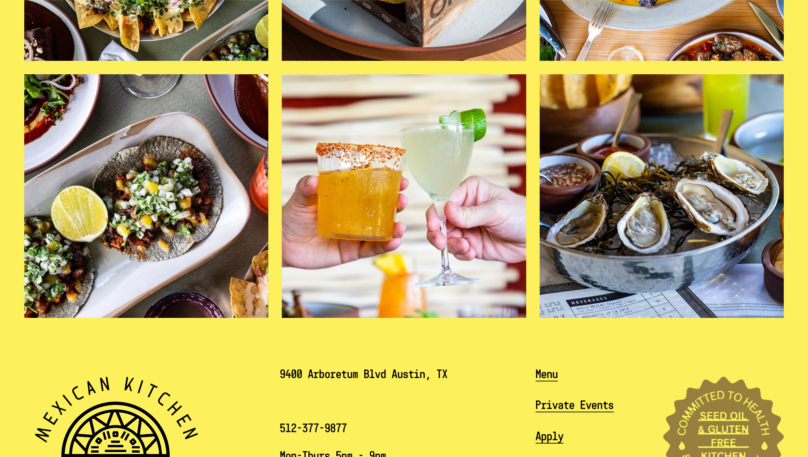
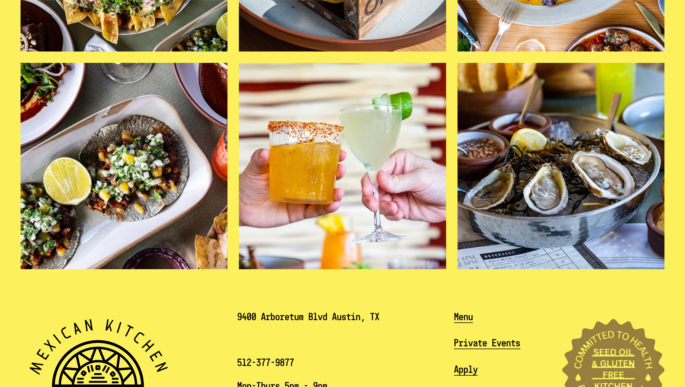

About Bulevar
Bulevar Mexican Kitchen celebrates the simple pleasures of premium seafood, prime steaks, organic chicken and heirloom vegetables cooked over live coals and shared around the family table.
As the sister restaurant to ATX Cocina, Bulevar prides itself on utilizing modern approaches combined with traditional Latin American flavors and practices in their 100% gluten-free kitchen. The atmosphere is fire-lit with a high-energy bar, tall ceilings, and big glass windows that push you to the patio with great Austin views and sunsets.
Gluten-Free Information
Bulevar operates a 100% gluten-free kitchen, making it completely safe for those with celiac disease and gluten sensitivities. Every dish on the menu is prepared without gluten, ensuring zero risk of cross-contamination.
Like its sister restaurant ATX Cocina, Bulevar is committed to clean ingredients and traditional cooking methods, providing a worry-free dining experience for the gluten-free community.
- 100% GF Menu
- Celiac Safe
- Dedicated GF Kitchen
- No Cross-Contamination
Popular Menu Items
The menu features wood-fired Mexican cuisine with standout dishes including:
- Wood-Fired Steaks: Prime cuts cooked over live coals
- Grilled Seafood: Fresh catches prepared with Mexican spices
- Organic Chicken: Free-range poultry with traditional seasonings
- Heirloom Vegetables: Seasonal produce from local farms
- Craft Cocktails: Handcrafted margaritas and mezcal drinks
The restaurant also offers Sunday Brunch (11am-2:30pm) and daily Happy Hour specials.
Location & Hours
Located in the Arboretum area of North Austin, Bulevar offers a sophisticated dining atmosphere with beautiful views and patio seating.
Hours:
- Monday-Thursday: 5 PM - 9 PM
- Friday: 11:30 AM - 10 PM (Lunch)
- Saturday: 4 PM - 10 PM
- Sunday: Brunch 11 AM - 2:30 PM, Happy Hour + Dinner 2:30 PM - 8 PM
- Happy Hour: Mon-Thurs 5-6 PM, Fri-Sun 4-6 PM
Reservations are recommended and can be made through OpenTable on their website.
Nearby Restaurants
- True Food Kitchen - Arboretum - North Austin